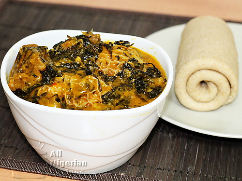

Bitterleaf Soup

Description
Bitterleaf soup is one of the most traditional soups in Nigeria. It is
native to the Igbos of Eastern Nigeria and most Igbos will tell you that
this is their favourite soup in the world
Ingredients
- Washed and squeezed bitterleaf – A handful
- 10 small corms Cocoyam
- 3 cooking spoons Red Palm Oil
- Assorted Beef: Includes best cut, shaki (Cow tripe)
- Assorted Fish: Dry Fish and Stock Fish
- Pepper, salt and ground crayfish (to taste)
- 3 stock cubes
- 1 teaspoon Ogiri Igbo (traditional seasoning)
Cooking Directions or Steps
-
Boil the shaki (cow tripe), stock fish and dry fish in 1 litre of water
till they are well done. First sign of a done shaki is that the cuts
will start curling on itself.
-
Wash the beef and add to the pot of shaki etc. and continue cooking.
When the meat is done, add 3 cubes of Maggi/Knorr and cook for 5
minutes.
-
Add pepper, ground crayfish, bitter leaves (if they have not been
parboiled) and cook for 10 minutes. Then add the cocoyam paste (in small
lumps) and the palm oil then go to step 5.
Note: If the bitter leaves were parboiled to remove the
bitterness, then for step 3; add pepper, ground crayfish, the cocgitoyam
paste (in small lumps), the bitter leaves and the palm oil. In other
words, add all the ingredients at this stage.
-
Cover the pot and leave to cook on high heat till all the cocoyam lumps
have dissolved. You can add more water if you feel that the soup is too
thick.
- Add salt to taste and the soup is ready